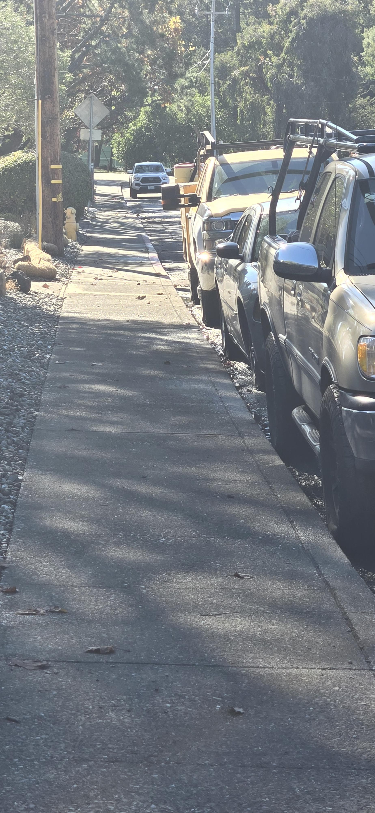

CWC Marin Flood Watch WET
Weather • Event • Tide & FloodWatch
SYNCING LIVE NOAA DATA...
Connecting to Real-Time Water Level Sensors...
Fetching live geodetic NAVD88 water levels from NOAA Station 9414863 & Station 9414290 to compute street elevation clearance and drainage status...
7.51 ft NAVD88
Station 9414874: 7.45' MLLW
+1.38 ft
Golden Gate Observed vs Ast
0.0 in dry
Road Crown: 7.42' NAVD88 • Travel lane dry
5.9 in clr
Travel lane dry
0.0 in dry
Street Margins & Low Gutter (Fills at 7.15')
0.0 in dry
Pedestrian curb ramp • Walking passability
⏱️ 48-Hour Tide Scrubber (Centered on Live Now)
LIVE: --:--
-24h Past
-12h
📍 LIVE NOW
+12h
+24h Forecast
📈 48-Hour Tide & Street Drainage Forecast
━ Creek Tide
╌ Street Lag
┈ Ast
LIVE: Water Level 7.39' NAVD88 • ROAD IMPASSIBLE (+5.3" on crown)
💡 Tip: Rotate phone sideways (landscape) for the widest, largest view! Tap '✕ Exit' when done.
🗺️ Marin County Coastal Flood & Elevation Map
TWL: 7.25 ft NAVD88
🌊 NOAA LiDAR Flood Overlay
🟢 Clear (Ground & Inverts Dry)
🟠 Gutters Wet (Crown Passable)
🔴 Roadway Overtopped
Synced with 48h Tide Scrubber ⏱️
📸 Nov 10 Morning Verification (10:38 AM • 7.22' TWL)
100% BONE DRY CONFIRMATION

10:38 AM • Crosswalk 100% DRY (7.22' TWL)
🅿️ Safe Parking Havens (Andy's Places Survey)
High Ground Safe Havens
If tides threaten Front Parking (> 7.55') or Low Driveways (> 8.15'), these surveyed locations remain elevated and accessible:
🅿️ Safe Parking 1 (Closest)
390 ft West • 37.94046, -122.53605
Elev: 2.24m GPS (Safe high ground)
🅿️ Safe Parking 2
750 ft Southeast • 37.93911, -122.53340
Elev: 1.84m GPS (Elevated bay)
🅿️ Safe Parking 4
850 ft Southeast • 37.93885, -122.53326
Elev: 2.27m GPS (High ridge)
🅿️ Safe Parking 3 (Highest)
1,090 ft South • 37.93795, -122.53388
Elev: 2.98m GPS (Extreme retreat)
📸 Nov 7 King Tide Peak Truth Sequence (10:06 - 10:07 AM)
Andy's Places Verification (7.47' Peak)

10:07 AM • Front Gutters 100% DRY

10:07 AM • Sag & Complex Flooded

10:06 AM • Drains 2 & 3 Filling
📸 Nov 7 Morning King Tide Peak Sequence (Today)
Andy's Field Sequence (Peak 7.47' NAVD88)

9:49 AM • Crown Passable (Dry Center)

9:49 AM • Gutters Taking Water (+3.8")
📸 Nov 6 Morning King Tide Peak Sequence
Andy's Field Sequence (Peak 7.32' NAVD88)

10:40 AM • Sag Flooded (+4.4")

10:40 AM • Gutters Flooded (+5.6")
📸 Nov 1 King Tide & DST Field Sequence
Andy's Daylight Saving Shift Photos (Peak 6.86')

4:09 PM • Crown Dry (6.84')

4:09 PM • Gutters Flooded (+1.7")

4:10 PM • Stall Apron Ponding
📸 Oct 31 Breach & Ground Survey Calibration
Andy's Field Sequence

Survey • Elevation & Drains

3:28 PM • Dry Baseline (6.78')

3:50 PM • Swale Filling (7.25')

4:28 PM • Sag Crown Breach (7.40')

4:31 PM • Peak Impassable (7.42')

4:34 PM • Swale Overflow

4:34 PM • Swale Runoff Detail

4:35 PM • Front Stalls Backfilling

6:33 PM • Gutters Flooded (Lag!)

6:33 PM • Crown Dry, Stalls Wet

6:33 PM • Stall Aprons Wet
📸 Oct 30 Ground-Truth Photo Calibration
Andy's Field Sequence

11:42 AM • Road Dry (3.2')

1:04 PM • Gutter Seep (6.70')

1:33 PM • Gutters Wet (7.05')

2:43 PM • Impassable Sag (7.55')

4:53 PM • Sag Still Flooded (7.03')

5:12 PM • Gutters & Sag Wet (6.95')

7:34 PM • Gutters Flooded (Lag!)
📋 Calibrated Elevation Thresholds
| Feature / Benchmark | Elevation | Status / Impact |
|---|---|---|
| Street Gutter Inverts | 6.70 ft | Water begins seeping into curb gutters (1:04 PM) |
| Lowest Crown in Sag Dip | 6.95 ft | True All-Street Clearance (Road covered in salt water until < 6.95') |
| High Road Crown (Foreground) | 7.31 ft | High ridge exposed, but sag dip ahead remains submerged (4:53 PM photo) |
| Small Car Impassable (Sag) | 7.55 ft | Travel lane depth ≥ 5.9" (Ground truth: 2:43 PM) |
| Low Driveway & Ground Apron (8.15') | 7.75 ft | Concrete floor. Kept dry today (peak was 7.70 ft) |
| Vehicle Door Sill Damage Level | 8.46 ft | +8.5" above ground where water enters low vehicles |
| SUV / Truck Impassable | 7.85 ft | High clearance vehicles ≥ 9" ground clearance |